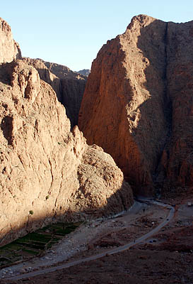

Exotisk klättring på röd kalksten.
Mestadels sportklättring. Korta leder, långa leder och multipitchleder. Tyvärr förtas intrycket lite av den dåliga föraren och ibland "äventyrlig" bultning. Vår och höst är bästa tiden. Vintern fungerar men det är riktigt kallt på kvällar och nätter. Vi hade t.om. lite snö när vi var där i mitten av december. Flyg till Marrakech eller ännu hellre till Quarzazate. Bil eller buss till Quarzazate, sedan till Tinerhir. Därefter är det bara någon mil till Todra Gorge. Resan tar med bil 5-8 timmar. Hyrbil kostade oss efter tuff förhandling 2000kr för en vecka. (dec 2007) Förare finns att köpa på plats. Kostar 2-300kr och består av kopierade a4-papper. Tyvärr stämmer föraren sällan med verkligheten. Det finns många alternativ för boende. Ett sunkigt rum med varm dusch kostade oss 250kr för två pers inkl frukost och middag under lågsäsong. Ingen idé att försöka boka något i förväg. Ta med långt rep, helst 70m, quickdraws, hjälm. Ett kilset och några friends är inte fel, samt en näve snabblänkar. Lite länkar:
Film där Said Belhaj klättrar i Marocko:
Kategori:Sport
Kategori:Sva
Kategori:Överhäng
Kategori:Multipitch
Kategori:Marocko
Kategori:Utomlands
Copyright (C) Permission is granted to copy, distribute and/or modify this document under the terms of the GNU Free Documentation License, Version 1.3